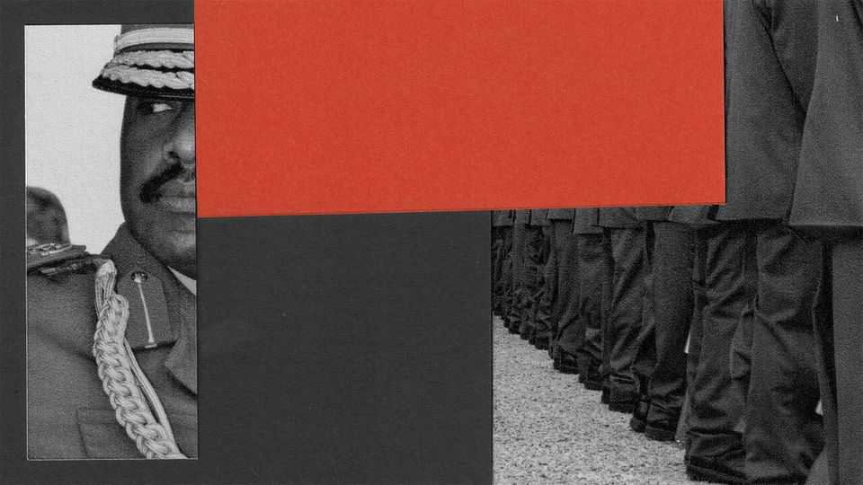

What will happen to Uganda when Yoweri Museveni goes?
Nothing good, if recent months are anything to go by

Sep 3rd 2026
On two sets of posters plastered across Kampala, Uganda’s capital, two men loom large. One is a paunchy figure with a wide-brimmed hat and a jaundiced stare. The other is younger and brasher-looking in military fatigues. The first is Yoweri Museveni, the 81-year-old president, who seized power after a civil war 40 years ago and is entering his dotage. The second is Muhoozi Kainerugaba, Mr Museveni’s capricious son.
General Kainerugaba serves as Uganda’s army chief, but he covets his father’s crown and increasingly behaves as though he were already in charge. Older Ugandans say his belligerence and brutality are reminiscent of Idi Amin, an infamous military dictator of the 1970s. His ambitions are causing ructions within the army and the ruling party, and even his own family, raising fears of a power struggle within the regime when Mr Museveni eventually goes. “Ours has been a history of extremes: either you have anarchy, or real totalitarianism,” says Norbert Mao, Uganda’s minister of justice. He is not alone in worrying that those days could soon return.
Mr Museveni put General Kainerugaba in charge of the armed forces in 2024. Yet even if the president has indeed been grooming his son as a successor, the two men are quite different. In person, Mr Museveni is a charismatic storyteller; General Kainerugaba tends to be taciturn. The father is fond of long speeches; his son is notorious for undignified outbursts on X. “These days I’m as sober as a cat,” he posted in the early hours of September 1st. “Women need to stand at least ten metres from me…for their safety.”
Outsiders sometimes see General Kainerugaba, who is 52, as a sort of comically conceited nepo-baby. Yet few Ugandans are laughing. During a crackdown after Mr Museveni’s re-election in a flawed vote in January, the general threatened to kill and castrate Bobi Wine, the main opposition candidate. Mr Wine went into hiding and is now in exile. Kizza Besigye, another prominent opposition figure, was abducted from Nairobi, Kenya’s capital, in 2024 and has been in prison ever since. He is standing trial on treason charges; General Kainerugaba has vowed to hang him. During a court hearing in July, Mr Besigye collapsed mid-speech and was hospitalised.
The general’s depredations have intensified in recent months. In July his soldiers abducted Erias Lukwago, a former mayor of Kampala and one of Mr Besigye’s lawyers. The army chief posted pictures of a blindfolded Mr Lukwago on X, boasting that he was in his “basement”. Mr Lukwago was later accused of treason and remains incarcerated. Between mid-June and mid-July alone, security forces unlawfully detained at least four other dissidents, according to Human Rights Watch. Several are believed to have been tortured.
Repression in Mr Museveni’s Uganda is nothing new. But there is a widespread sense that the regime is degenerating into something darker and more despotic. The state once sought to cover its abuses with a veneer of constitutional legitimacy. “Now we have a rabid, unapologetic, in-your-face dictatorship,” says Eron Kiiza, a lawyer who was arrested and tortured last year and is also now in exile.
Such views are not limited to the opposition. “The gap between what we promise in our laws and what is really happening is widening,” admits Mr Mao, the justice minister. He says the army has violated the constitutional rights of Mr Besigye by denying him medical treatment when he is evidently ill. The minister has also received credible reports of torture by the security forces. But General Kainerugaba “doesn’t care what the law says”, Mr Mao observes. “I don’t know whether we have reached the level of Idi Amin’s time, where bodies are found floating on the Nile,” says another government insider. “I think not yet. But these are grave issues of concern.”
Can anything stop the slide? Mr Museveni has never explicitly said he wants his son to succeed him. In the past he has reined in some of his wilder escapades. But the leader has grown frail of late. He increasingly seems unwilling or unable to restrain his son.
That appears to have emboldened the general to try to crush his perceived enemies and rivals. In May he had Anita Among, a powerful former speaker of parliament once considered untouchable, put under house arrest (she has since been released). Several senior officers have been purged. On August 25th the general’s men kidnapped a close associate of Odrek Rwabwogo, Mr Museveni’s son-in-law, who is believed to have presidential aspirations. “This is my last warning to that fool Odrek,” fulminated the general on X, threatening to arrest Mr Rwabwogo and to have the associate either beaten to death or executed by firing squad.
The one man who could perhaps restore some sanity to Mr Museveni’s court is Salim Saleh, the president’s reticent younger brother. A retired general, Mr Saleh is a powerful figure behind the scenes. He is understood to be disconcerted by some of his nephew’s behaviour, and is considered the only person aside from Mr Museveni whom General Kainerugaba dare not defy.
If a dynastic succession cannot be avoided, much of Uganda’s elite would prefer Mr Saleh as president. He is seen as rational and comparatively conciliatory on ethnicity. General Kainerugaba, by contrast, is widely reviled as an ethnic chauvinist. He calls his own people, the Bahima, “a special breed”, disparaging other groups with crude racial slurs. Many Ugandans are also suspicious of his close ties with neighbouring Rwanda. The general likes to say he has two uncles: Mr Saleh and Paul Kagame, Rwanda’s strongman president. “Which uncle will eventually have more influence on his student?” asks the government insider.
It is unclear what Mr Saleh wants. Some think he would prefer to remain a kingmaker. Others reckon that in the event of a crisis within the regime, he would intervene and, if necessary, take power himself. “The Raúl Castro scenario is not far-fetched,” says a well-connected observer.
How General Kainerugaba would react is anyone’s guess. Many suspect that the bulk of Uganda’s army, if push came to shove, would side with Mr Saleh. Yet Uncle Kagame, across the border, may have his own ideas about how things should play out. Mr Saleh and the general are said to be close, making it difficult to imagine they would come to blows. But when so much power is concentrated in so few hands, a single family dispute could be enough to destabilise a country. ■
Sign up to the Analysing Africa, a weekly newsletter that keeps you in the loop about the world’s youngest—and least understood—continent.